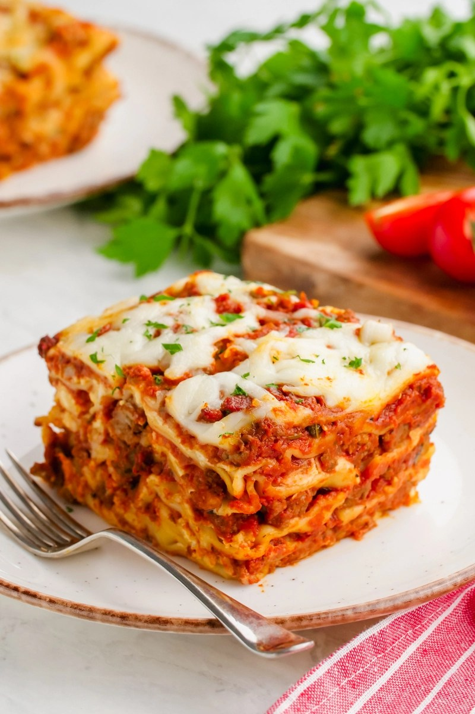

Lasagna

Super Easy Lasagna
Lasagna is the super easy comfort food.
Ingredients
- 1 Box oven ready lasagna noodles(8oz is fine)
- 1 Tbsp olive oil or avocado oil
- 1 lb ground beef
- 1 medium white onion, diced
- 1 (32oz to 45oz) jar of spaghetti sauce (or homemade is better of course! I like the Prego Mushroom.)
- 1 (16 ounce) package plain cottage cheese
- 1 pound mozzarella cheese, shredded or grated
Directions
- In a large skillet or saucepan, heat the oil on medium then add the diced onions. Cook for 5-10 minutes or until they start getting translucent. Pour onions into a separate dish while the meat cooks (so they don't burn).
- In the same skillet, add ground beef and break up into little pieces. Cook until browned, stirring occasionally.
- Add onions back to the hamburger. Pour in the entire jar of spaghetti sauce. Simmer for 10-20 minutes
- Preheat the oven to 350.
- Layer the following in the baking pan: a single layer of uncooked noodles, 1/3 of the sauce, 1/3 of the cottage cheese, 1/3 of the mozzarella. Repeat two more times, ending with mozzarella on the top. For each layer just spread the stuff out as best you can, no need to be perfectly even.
- Bake for 45 minutes in the preheated oven, and let cool for 10 minutes before serving to keep the meat nice and juicy.